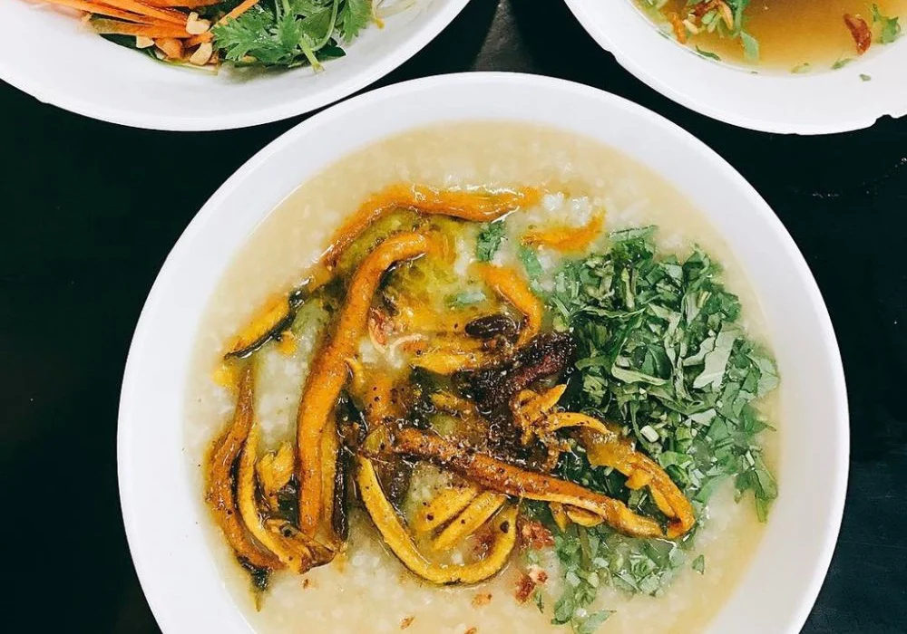

Cháo lươn Nghệ An từ lâu đã trở thành niềm tự hào của ẩm thực xứ Nghệ. Thịt lươn đồng được làm sạch, xào ngấm đều vị cay nồng của ớt, tiêu, màu vàng óng ả của nghệ và mùi thơm của rau răm. Bát cháo sánh mịn bốc khói nghi ngút là lựa chọn tuyệt vời cho bữa sáng đậm đà hương vị quê hương
